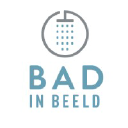

Voor wie Yomi werkt
Yomi is gebouwd voor organisaties die data en marketing willen verbinden:
- • B2B-organisaties die slimmer leads willen vinden en kwalificeren
- • Retail & omnichannel bedrijven die inzicht willen in marktgebieden
- • Franchiseformules die rayonpotentie willen begrijpen
- • Marketing- en digital agencies die een whitelabel dataspecialist zoeken
Ervaring





Onze Diensten
Van technische implementatie tot strategisch advies.
Rayontool
Interactieve kaart voor groeiplanning en leaddistributie. Combineert marktaandeel, demografie en formuledata.
B2B Lead Engine
Automatische verrijking en scoring van bedrijfsdata met AI en Google Places-data.
Performance Marketing
SEO, SEA en CRO uitgevoerd op basis van rendement, niet alleen kliks.
Dashboards & Data
Koppelingen tussen ERP, CRM en marketingdata, gebouwd met Power BI of Looker Studio.
AI Automatisering
Praktische workflows voor lead scoring, contentgeneratie en interne automatiseringen.
Consultancy op maat
Voor integraties, routing, datamodelvalidatie en complexe retail-/franchisevraagstukken.
Rayontool voor retail en franchise
Een interactieve kaart die marktaandeel, demografie, vestigingsdata en leads combineert. Ontworpen voor franchiseformules, retailers en serviceorganisaties.
- Bekijk potentie per wijk of PC4
- Optimaliseer leadverdeling en vestigingslocaties
- Combineer CBS-data, klantdata en Google Places
- Exporteer rapportages direct voor MT of franchisenemers
B2B Lead Engine
Meer info- Realtime bedrijfsverrijking
- AI-gebaseerde scoremodellen
- Slimme targeting voor sales
- Direct te integreren in CRM of ERP
Performance Marketing
- Geavanceerde tracking via GTM
- Full funnel SEO en SEA
- Focus op marge, niet alleen omzet
- Dashboards voor direct inzicht
Dashboards & Data Stack
- Combineer verkoop, voorraad, marketing en logistiek
- Eén waarheid: betrouwbare data voor teams
- Dashboards die bruikbaar zijn, geen datagraven
Onze Tech Stack


 ERP-integraties
Middleware
ERP-integraties
Middleware
Resultaten uit de praktijk
Nieuwe rayonanalyse gemaakt
Cross-channel dashboard
Slimmere targeting
Werkwijze
Inventarisatie & datacheck
Proof of Concept
Automatiseren & optimaliseren
Doorlopende samenwerking of overdracht
Whitelabel Samenwerking
Yomi werkt ook whitelabel voor marketing-, development- en consultancybureaus.
Over Yomi
Yomi is opgericht door een data-gedreven specialist met ervaring in retail, franchise, e-commerce en B2B leadgeneratie. De kracht ligt in het koppelen van systemen, het automatiseren van handwerk en het bouwen van oplossingen die meteen waarde leveren. Compact, direct en technisch sterk.